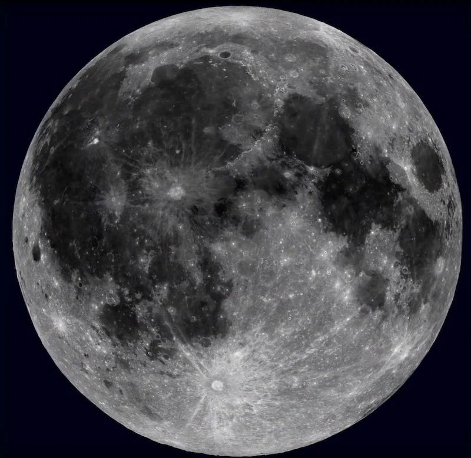
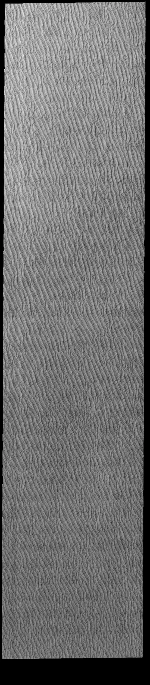

Два цвета Луны
Светлые материки и тёмные моря видны даже без телескопа. Откуда взялся этот рисунок?
Журнал о космосе

Светлые материки и тёмные моря видны даже без телескопа. Откуда взялся этот рисунок?

На снимке «Кассини» кольца Сатурна превращаются в тонкую полосу над облаками.

Северные дюны Марса сохраняют в песке рисунок местных ветров.